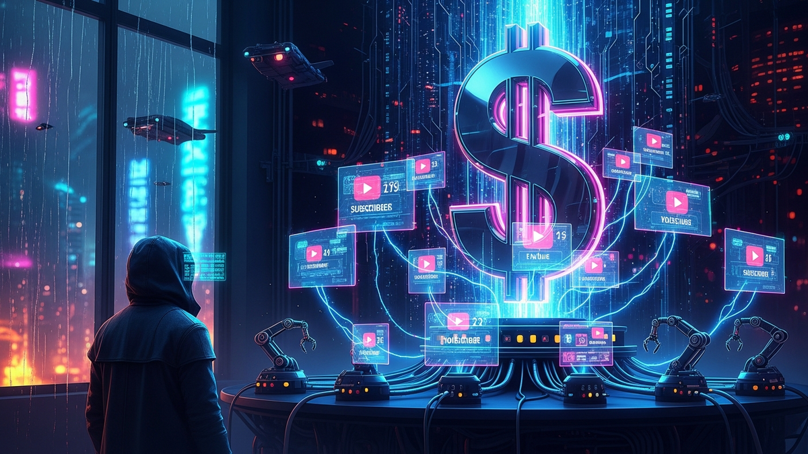

The digital landscape of entrepreneurship is constantly evolving, presenting unprecedented opportunities for those with vision and strategic acumen. Among the most compelling avenues for wealth creation in the modern era stands YouTube automation – a sophisticated business model that allows individuals to build lucrative, scalable content empires without ever having to appear on camera or even create the content themselves. This isn't merely about uploading videos; it's about engineering a system, a well-oiled machine that generates high-quality, engaging content consistently, attracting millions of views and, subsequently, substantial revenue. The dream of a million-dollar business, once reserved for tech moguls and seasoned investors, is now within reach for anyone willing to master the art and science of automated YouTube channels. It's a testament to the power of leveraging global talent, cutting-edge artificial intelligence, and the immense reach of the world's second-largest search engine. This comprehensive guide will dissect the intricate layers of YouTube automation, revealing the blueprint for transforming a digital concept into a tangible, seven-figure enterprise. We will explore the strategic foundations, the operational mechanics, the essential tools, and the mindset required to navigate this exciting, yet demanding, journey towards financial independence and unparalleled business growth.
Embarking on the journey of YouTube automation is akin to constructing a complex, high-performance engine; every component must be meticulously designed and perfectly synchronized for optimal output. At its core, YouTube automation is a business model where you build and manage YouTube channels that produce content without your direct involvement in the creation process. Instead, you orchestrate a team of freelancers, utilize AI tools, or a combination of both, to handle tasks such as scriptwriting, voiceovers, video editing, and thumbnail design. The ultimate goal is to create a sustainable, scalable content factory that consistently publishes engaging videos across various niches, driving millions of views and generating passive income. This model is particularly appealing because it decouples income from personal time and direct labor, allowing for exponential growth potential that traditional content creation often struggles to match. Imagine launching multiple channels, each a revenue stream, operating simultaneously with minimal daily oversight from you. This is the promise of YouTube automation.
The initial phase of this blueprint involves rigorous market research and niche selection. This is not a step to be rushed; it is the bedrock upon which your entire million-dollar empire will be built. A profitable niche is characterized by high demand, low to moderate competition, and a strong potential for monetization. Think evergreen topics that consistently attract an audience, or trending subjects with a long tail of interest. Examples often include finance, luxury lifestyle, science explainers, technology reviews, historical content, self-improvement, or even highly specific "how-to" guides. The key is to identify topics where people are actively searching for information or entertainment, and where advertisers are willing to pay a premium for ad placements. Once a niche is identified, a thorough competitive analysis is crucial. What are existing channels doing well? Where are their weaknesses? What unique angle or value proposition can your channel offer to stand out? This strategic positioning is vital for capturing audience attention in a crowded digital space.
Following niche selection, the next critical component is content strategy and production pipeline development. This involves outlining the types of videos you will create, their average length, frequency of uploads, and overall brand voice. A consistent content schedule is paramount for algorithm favorability and audience retention. The actual content creation process is where automation truly shines. Instead of personally filming or narrating, you'll delegate these tasks. Scriptwriters will craft compelling narratives based on your content ideas and research. Voiceover artists, either human professionals or advanced AI voice generators like ElevenLabs or Murf.ai, will bring these scripts to life. Video editors will then assemble the visual components, incorporating stock footage, graphics, animations, and sound effects to create a polished, professional video. Thumbnail designers will craft eye-catching images that compel viewers to click. Each step is a distinct task that can be outsourced to skilled professionals on platforms like Fiverr, Upwork, or OnlineJobs.ph, or increasingly, handled by sophisticated AI tools. This modular approach allows for rapid content production and scalability, as you can easily increase your output by simply engaging more freelancers or scaling up your AI tool subscriptions. The entire process is managed by you, the entrepreneur, who acts as the project manager and strategic director, ensuring quality control and adherence to the channel's vision. This systematic workflow is what transforms individual videos into a scalable content machine, laying the groundwork for substantial cash flow and ultimately, a million-dollar valuation.
The journey to a million-dollar YouTube automation business begins not with a single video, but with a meticulously chosen niche and a robust content ideation strategy designed for viral potential. Without a clear, profitable niche, even the most expertly produced videos will struggle to find an audience and generate meaningful revenue. The art of niche domination lies in identifying underserved or highly engaged audiences within specific categories, where advertiser demand is high, and the potential for long-term content creation is vast. This requires more than just a passing interest; it demands deep market research, an understanding of audience psychology, and a keen eye for untapped opportunities. Consider niches that address pain points, provide valuable information, offer entertainment, or tap into aspirational desires. Examples might include "luxury travel hacks," "explaining complex scientific concepts simply," "personal finance for millennials," or "deep dives into historical mysteries." The goal is to carve out a unique space where your automated content can truly shine and capture dedicated viewership.
Once a potential niche is identified, extensive keyword research becomes your compass. Tools like TubeBuddy, VidIQ, and even Google's own Keyword Planner are indispensable for uncovering what your target audience is actively searching for. Look for keywords with high search volume but relatively low competition, indicating a sweet spot where your videos have a higher chance of ranking. Analyze competitor channels within your chosen niche: what are their most popular videos? What content gaps exist? What common themes resonate with their audience? By deconstructing successful videos, you can reverse-engineer their appeal and adapt those proven strategies to your own content. However, simply replicating is not enough; true domination comes from innovation and offering a superior or unique perspective. This could mean presenting information in a more engaging way, providing deeper analysis, or simply having a more polished and professional aesthetic, all achievable through a well-managed automation pipeline.
Content ideation, especially for viral success, requires a blend of creativity and data-driven insights. It's not about guessing what might go viral; it's about systematically generating ideas that have a high probability of resonating with your target demographic. Brainstorming sessions, even if you're the sole operator, should be structured. Start with broad topics within your niche, then drill down into specific questions, problems, or curiosities that your audience might have. For instance, in a personal finance niche, instead of "investing tips," consider "5 uncommon dividend stocks for passive income" or "How to save $10,000 in 6 months on a modest salary." These specific, benefit-driven titles are more likely to attract clicks. Furthermore, pay close attention to current trends and news within your niche. Timely content can often experience significant spikes in viewership. However, balance trending topics with "evergreen" content – videos that remain relevant and continue to attract views months or even years after publication. A strong foundation of evergreen content provides consistent baseline traffic, while timely content offers opportunities for viral surges.
Finally, the packaging of your content plays an enormous role in its discoverability and click-through rate. A compelling video title is crucial, often incorporating strong keywords, numbers, or emotional triggers. But it is the thumbnail that often makes the first impression. A professionally designed, eye-catching thumbnail is an absolute necessity for standing out in the crowded YouTube feed. It should be clear, convey the video's essence, and evoke curiosity. This is another area where outsourcing to skilled graphic designers on platforms like Fiverr or using powerful design tools like Canva or Adobe Photoshop becomes essential. By combining strategic niche selection, rigorous keyword research, smart content ideation that balances evergreen and trending topics, and optimized titles and thumbnails, you create a powerful flywheel effect. Each successful video contributes to channel growth, attracting more subscribers and views, which in turn fuels the potential for more viral hits. This systematic approach to content creation and presentation is not just about making videos; it's about building an audience and, ultimately, a highly profitable, million-dollar automated YouTube business.
Once a profitable niche is established and a robust content strategy is in place, the true magic of YouTube automation unfolds through the assembly line of content production. This is where ideas are transformed into polished, high-quality videos without the channel owner ever needing to touch a camera or microphone. The efficiency and scalability of this process are what differentiate a hobby channel from a million-dollar enterprise. The assembly line typically consists of three primary stages: scriptwriting, voiceover production, and video editing, each meticulously managed and often outsourced or automated.
The first critical stage is scriptwriting. A compelling script is the backbone of any successful video, guiding the narrative, providing valuable information, and keeping the viewer engaged from start to finish. For YouTube automation, scriptwriters are often sourced from freelance platforms like Fiverr, Upwork, or specialized content writing services. You, as the channel owner, provide the topic, key points, and desired tone, and the writer crafts a detailed, engaging script. The quality of the script directly impacts audience retention and overall video performance, so investing in skilled writers is paramount. Alternatively, advanced AI tools such as ChatGPT or Jasper AI are revolutionizing this stage, capable of generating comprehensive and coherent scripts based on prompts. While AI-generated scripts often require human review and refinement for nuance and originality, they significantly reduce production time and cost, making the automation process even more efficient. The goal is to produce scripts that are not only informative but also structured for visual storytelling, with clear cues for the video editor.
Following the script, the next crucial step is the voiceover. The voiceover provides the auditory component that brings the script to life, setting the tone and guiding the viewer through the content. There are two primary approaches for automated channels: human voiceover artists or AI-generated voices. Human voiceover artists, again found on platforms like Fiverr or Voices.com, offer a natural, nuanced, and emotionally resonant delivery, which can be particularly effective for complex or sensitive topics. Investing in a professional voiceover artist who can consistently deliver high-quality audio is a wise decision for establishing brand identity and trust. However, the rapidly advancing field of AI voice generation presents a highly scalable and cost-effective alternative. Tools like ElevenLabs, Murf.ai, and WellSaid Labs can produce incredibly realistic and natural-sounding voices in various tones, accents, and languages. These AI voices are ideal for channels requiring high volume content or operating on a tighter budget, allowing for rapid scaling without the logistical challenges of managing multiple human voice artists. The key is to choose a voice that aligns with your channel's brand and niche, ensuring clarity and engagement.
Turn your scripts into professional videos automatically. Use code PAVEL20 for 20% OFF!
START CREATING WITH PICTORYThe final and often most labor-intensive stage is video editing and visual assembly. This is where the script and voiceover are combined with visual elements to create the final video. Video editors, typically freelancers, utilize professional software such as Adobe Premiere Pro, DaVinci Resolve, or CapCut. Their task involves sourcing relevant stock footage, images, graphics, animations, and sound effects to visually illustrate the script. They are responsible for pacing, transitions, text overlays, background music, and ensuring the video flows seamlessly. Quality editing is crucial for audience retention; a well-edited video keeps viewers engaged, while poor editing can lead to early drop-offs. Channel owners provide specific instructions, brand guidelines, and sometimes even template styles to ensure consistency across all videos. The beauty of this outsourced model is that you're tapping into a global talent pool, often finding highly skilled editors at competitive rates. As your channel grows, you might even hire a dedicated editor or build a small team of editors to handle increasing content demands. This automated content assembly line, meticulously managed and continuously optimized, is the engine that drives consistent content output, fuels channel growth, and propels your YouTube automation business towards its million-dollar objective.
Building a million-dollar YouTube automation business isn't solely about generating millions of views; it's about strategically converting those views into substantial revenue through diversified monetization strategies. Relying on a single income stream, especially just AdSense, can limit your growth potential and leave your business vulnerable to algorithm changes or policy updates. True monetization mastery involves layering multiple revenue streams, each designed to maximize the value derived from your audience and content. This multi-pronged approach ensures stability, exponential growth, and a quicker path to that seven-figure valuation.
The most common and foundational revenue stream for YouTube channels is AdSense. Once your channel meets YouTube's eligibility requirements (typically 1,000 subscribers and 4,000 watch hours in the past 12 months), you can apply to the YouTube Partner Program and start earning revenue from ads displayed on your videos. While AdSense can be a significant source of income for channels with high viewership, especially in high-CPM (cost per mille) niches like finance, real estate, or technology, it's often not enough on its own to reach the million-dollar mark quickly. The earnings per thousand views (RPM) can vary widely, making it an unpredictable sole income source. However, it provides a crucial baseline and validates your content's appeal to advertisers. Optimizing your video length, ad placement, and audience retention can significantly boost your AdSense earnings, but it should be viewed as one component of a larger monetization strategy.
Affiliate marketing stands out as a powerful and highly scalable revenue stream for automated channels. This involves promoting products or services from other companies and earning a commission for every sale or lead generated through your unique affiliate link. The key is to integrate affiliate promotions naturally and authentically within your content. For a technology review channel, this might mean linking to the specific gadgets discussed on platforms like Amazon Associates or ShareASale. For a personal finance channel, it could involve recommending budgeting software or investment platforms. The beauty of affiliate marketing is its scalability; once a video is published, it can continue to generate commissions passively for months or even years. Building trust with your audience is paramount here; only promote products or services that genuinely align with your niche and provide value to your viewers. Strategic placement of links in video descriptions, pinned comments, and even subtle mentions within the script can significantly enhance conversion rates, turning your viewership into a direct sales force for your partners.
Beyond AdSense and affiliate marketing, selling your own digital products offers the highest profit margins and unparalleled control over your income. This can include eBooks, online courses, templates, presets, or even premium content access. For example, a channel focused on graphic design tutorials could sell custom design templates or a comprehensive course on a specific software. A fitness channel could sell meal plans or workout guides. The initial investment in creating these products can be recouped many times over, and the revenue generated is entirely yours, free from platform cuts (beyond payment processing fees). This strategy transforms your channel from a content platform into a direct sales funnel for your proprietary offerings, exponentially increasing your potential earnings per subscriber. Building a small email list or Discord community around your channel can also be instrumental in launching and promoting these digital products effectively.
Finally, as your automated channels grow in authority and viewership, opportunities for sponsorships and brand deals will emerge. Brands are increasingly looking to collaborate with niche-specific channels that have engaged audiences. This involves creating dedicated videos, integrating product mentions, or featuring specific services in exchange for a flat fee. These deals can be incredibly lucrative, often paying significantly more than AdSense for a single video. Furthermore, platforms like Patreon or YouTube's own membership features allow your most dedicated fans to directly support your channel through recurring monthly payments, offering them exclusive content or perks in return. By strategically combining AdSense, affiliate marketing, digital product sales, and sponsorships, you create a robust, diversified revenue ecosystem that not only ensures financial stability but also accelerates your journey towards building a multi-million-dollar YouTube automation empire, leveraging every view and every subscriber to its fullest economic potential.
The transition from a successful individual YouTube automation channel to a multi-channel, million-dollar empire is fundamentally rooted in the ability to scale. This isn't just about making more videos; it's about building a robust, efficient team and automating every possible operational process. As you move beyond managing a single channel, your role evolves from a hands-on operator to a strategic CEO, overseeing a distributed workforce and fine-tuning a complex content production machine. Without effective scaling strategies, the entrepreneur inevitably becomes the bottleneck, stifling growth and limiting revenue potential.
The cornerstone of scaling is undoubtedly team building. Initially, you might be sourcing individual freelancers for each task – a scriptwriter here, a voiceover artist there, an editor for each video. However, as volume increases, managing disparate freelancers becomes cumbersome. The next logical step is to build a dedicated, virtual team. This typically involves hiring:
Beyond human capital, operational automation is equally vital. This involves leveraging technology to streamline repetitive tasks and improve workflow efficiency. Project management tools like Asana, Trello, or ClickUp become indispensable for assigning tasks, tracking progress, and centralizing communication. These platforms allow you to create templates for each video's production cycle, ensuring no step is missed and everyone knows their responsibilities. For content ideation, subscribing to premium versions of TubeBuddy or VidIQ can automate keyword research and competitor analysis, providing a continuous stream of profitable content ideas. AI tools, as mentioned previously, play an increasingly significant role in automating script generation and voiceovers, dramatically reducing the time and cost associated with these stages. Furthermore, consider automating aspects of your video descriptions (e.g., boilerplate text, affiliate disclaimers) and even comment moderation using certain third-party tools or YouTube's own moderation features.
To truly scale, you must also master the art of delegation and systemization. Document every single process, from how a video idea is approved to the final upload checklist. These SOPs not only facilitate onboarding new team members but also ensure consistency and quality across all your channels. Once a channel is running smoothly with a dedicated team and automated processes, you can replicate this blueprint to launch additional channels in different niches. Each new channel becomes another revenue stream, managed by its own set of outsourced talent, all overseen by your core management team (or yourself, initially). This parallel expansion strategy is how you multiply your income streams and accelerate your journey to a million-... and implement these strategies to ensure long-term success.
In summary, staying ahead of these trends is the key to business longevity and security. By following this guide, you maximize your growth and ensure a stable digital future.
Don't wait for the headlines. Our Private Telegram Channel delivers real-time AI security updates and digital wealth strategies before they go viral. Stay protected. Stay ahead.
⚡ JOIN THE 1% NOWNo sign-up required. Instantly check risks, analyze AI text, or calculate your digital finances.